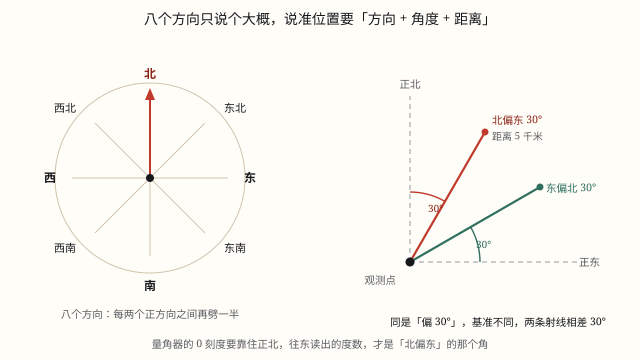

方向与位置
先用八个方向大致定位，再配上角度和距离精确描述：「北偏东 30°，距离 500 米」。
| 所属主题 | 图形与位置 |
|---|---|
| 所属模块 | 图形与几何 |
| 课标学段 | 第三学段（5~6年级） |
| 前置知识 | 角的度量与分类 |
| 核心素养 | 空间观念几何直观应用意识 |
课标要求
| 图形与几何·图形的位置与运动 | 能根据参照点的方向和距离确定物体的位置；会在实际情境中，描述简单的路线图（例35）。 印刷第 33 页 行为动词：掌握 |
|---|---|
| 综合与实践·主题活动 | 在生活情境中，认识东北、西北、东南、西南四个方向，了解“几点钟方向”，会描绘物体所在的方向，发展空间观念（例56）。 小学部分 行为动词：经历 |
说明
描述一个物体在哪，有两套办法。
第一套：八个方向。在东、南、西、北四个基本方向之间，再加入东北、东南、西北、西南，共八个。日常生活中「学校在小明家的东北方向」这样描述就够用。
第二套：方向 + 角度 + 距离，用于需要精确定位的场合，比如航海、导航、地图作业。写法如「北偏东 30\degree，距离 500 米」。
「北偏东 30\degree」的意思是：以正北为基准，向东偏转 30\degree。基准方向写在「偏」字前面，偏转方向写在后面——这个顺序不能反。
使用场景
导航 App：「前方 300 米右转」背后就是方向和距离的计算。
共享单车找车：App 上显示车在你的「东北方向 200 米」。
操场排队：体育老师喊「面向北，向左转」，就是用基本方向指挥。
台风路径预报：「台风中心位于某岛东偏南 25\degree 方向 600 公里处」。
教室座位表：第几列第几行是另一套定位方式（数对）。
注意点
「北偏东 30\degree」不等于「东偏北 30\degree」。前者从北向东偏 30 度（离北更近），后者从东向北偏 30 度（离东更近），两者相差 30 度。
基准方向写在「偏」字前面，偏转方向写在后面。看准了再画。
方向和距离缺一不可：只说方向不知道多远，只说距离不知道在哪。
观测点是谁要先说清：「A 在 B 的北偏东 30\degree」是以 B 为观测点。反过来「B 在 A 的（ ）」方向正好相反——南偏西 30\degree。
图上距离要先看图例和比例尺，不能直接用尺子量的厘米数当实际距离。

图 1：说准一个位置，方向、角度、距离一个都不能少
为什么是这样
算理推导
先解决最粗的问题：一个东西在哪儿，至少要有个大致方向。于是人们定了东、南、西、北四个基本方向。
但四个方向太粗了——「在东北方向」可能差出 45 度。于是把相邻两个基本方向之间再平分，得到东北、东南、西北、西南，一共八个方向，精度提高一倍。
八个方向还不够精确怎么办？加角度。以某个基本方向为基准，说出偏转了多少度，方向就唯一确定了。
为什么写成「北偏东 30\degree」而不说「东偏北 60\degree」？因为习惯上取离得近的那个基本方向做基准。30 度离北近，就以北为基准；如果是 60 度，就该说「东偏北 30\degree」。
光有方向还是一条射线，不知道多远。所以必须再补上距离。方向定射线、距离定射线上哪个点，两者合起来才唯一确定一个位置。
最后注意观测点：方向和距离都是相对于某个参照点说的。换个参照点，方向和距离全变。所以描述位置的第一句话应该是「以……为观测点」。
动手实验
站在操场中央，面向北。伸直右臂指向东，然后慢慢把手臂从北向东转，转到一半（45 度）时停下——这就是东北。现在再体会「北偏东 30 度」和「东偏北 30 度」的差别：前者是手臂从北出发向东转 30 度（还比较靠北），后者是从东出发向北转 30 度（已经很靠东了）。让同学站在两个方向上，你站在中间看，会发现两人相距约 30 度——差别相当大，绝对不能混。
按场景的例题
例 1（场景：行程出行） 用导航找共享单车
App 显示一辆单车在你所在位置的「北偏东 30\degree 方向，距离 150 米」。它大概在什么位置？
解：以你所在位置为观测点，先面向正北，再向东偏转 30\degree 画一条射线，在这条射线上量出 150 米的点，就是车的位置。
答：在你北偏东 30\degree 方向 150 米处。
例 2（场景：自然现象） 看台风路径预报
预报说「台风中心在某岛东偏南 25\degree 方向」，这个方向是以哪个方向为基准、往哪偏？
解：以正东为基准，向南偏转 25\degree。基准在「偏」字前（东），偏转方向在「偏」字后（南）。
答：以正东为基准，向南偏 25\degree。
例 3（场景：上学日常） 描述两人的相对位置
已知「图书馆在学校的北偏东 40\degree 方向」，那么学校在图书馆的什么方向？
解：方向相反：北的反向是南，东的反向是西，角度不变。所以是南偏西 40\degree。
答：学校在图书馆的南偏西 40\degree 方向。
例 4（场景：校园生活） 判断描述是否完整
有人说「操场在学校的东边」，这个描述够吗？
解：不够。只说了方向，没说距离，无法知道具体在哪。还缺观测点（以学校为观测点这句倒是可以从语境推断）。
答：不够，必须补上距离，如「东偏北 20\degree 方向 300 米」。
常用推论
八个方向：东、南、西、北、东北、东南、西北、西南。
精确定位 = 方向（含角度）+ 距离，缺一不可。
「A 偏 B n\degree」中 A 是基准方向，B 是偏转方向。
相对方向相反：北↔南、东↔西，角度不变。
习惯取较近的基本方向做基准：偏离小于 45\degree 时就以它为准。
易错点
错把「北偏东 30\degree」画成「东偏北 30\degree」。
为什么错看反了基准。前者从北向东偏 30 度，后者从东向北偏 30 度，两者相差 30 度。
正确看「偏」字前面的字：前面是北，就从北画起。
错只说方向不说距离，认为位置已经确定了。
为什么错一个方向对应一条射线，射线上有无数个点。必须再给距离才能定点。
正确方向 + 距离，两者都要说。
错把「A 在 B 的北偏东 40\degree」反过来答成「B 在 A 的北偏东 40\degree」。
为什么错换了观测点，方向应该反过来，不是保持不变。
正确反过来是「南偏西 40\degree」。
错在地图上直接用尺子量出的厘米数当实际距离。
为什么错图上距离要按比例尺换算才是实际距离。
正确先读比例尺，再换算。
直观理解
描述位置就像打电话叫人：「往北走，再往东偏一点，大概两百米」。方向是「往哪边」，角度是「偏多少」，距离是「走多远」，三样齐全对方才能找得到。少说一样，对方就只能在一条街上来回找。而「北偏东」和「东偏北」的差别，就像站在十字路口——一个说的是往北走时稍微往东拐，另一个说的是往东走时稍微往北拐，两个地方能差出一整个街区。
东南西北四个方，中间再加成八个。要说精确加角度，基准写在偏字前。方向距离两齐全，位置才能定得全。换个观测点来看，南北东西要掉转。